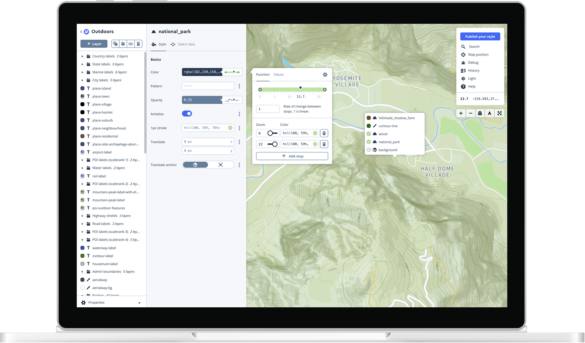
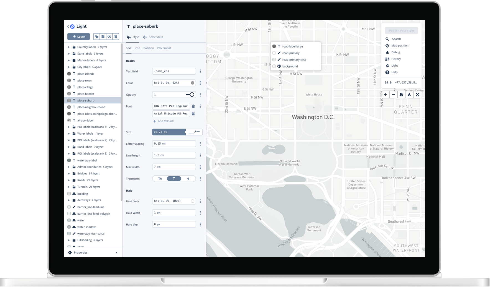
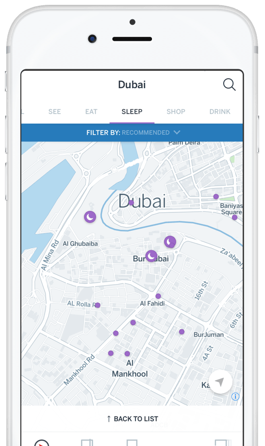

認識XGIS
XGIS 是一套二維與三維地理資訊系統開發工具，提供各種平臺的地圖化解決方案，能快速開發出各種地理資訊系統，並支援數百種常用GIS格式，無需轉換格式，其應用範圍。
資料處理能力
空間查詢
圖資編輯與擷取功能
路網分析元件與跨平台地圖支援
資料處理能力
- 支援通用的向量及網格與大量的常用影像，無需轉檔即可匯入。
- 可指定向量或影像，製作成Tile金字塔，加快讀取速度， TileMap與Google Map相容。
- 具備直接讀取空間資料庫，可進行匯入匯出，另支援最新版SQLServer LocalDB。

空間查詢
支援、點、線、面Buffer功能，並可利用Buffer查找物件。
支援環域分析，並可進一步統計產生圖表。
提供一般GIS分析功能，如屬性查詢、以屬性找物件...等。
圖資編輯與擷取功能
具有新增、編輯、刪除及移動點、線、多邊形圖徵等功能。
提供KML讀取及編輯之功能。
對於線圖徵及多邊形圖徵可新增、刪除及移動轉折點，以改變線及多邊形的形狀。
具備自動鎖點(SNAP)之功能，可設定欲連結之圖層，或群組圖層。


路網分析元件與跨平台地圖支援
具備將向量圖層轉換成路網圖層之功能。
可設定多點目的地，查詢其最短路徑。
可將向量轉換成大眾運輸路網，並具備管理/維護之功能。
大眾運輸工具分析能力，可查詢路線與最佳轉乘方式。
支援HTML5開發環境，能支援各式智慧型手機平台，包函IOS、Android、Windows...等。